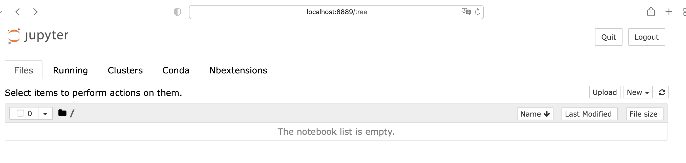

Introduction to Jupyter notebooks#
Overview#
Questions
What are Jupyter Notebooks?
Why are they useful?
Objectives
Start a new notebook
Add some markdown to your notebook
What are Jupyter Notebooks?#
Jupyter notebooks are a way of running Python code (and other languages). Notebooks enable you to keep notes, images, equations etc. together with your code. They do this by using different types of ‘cells’. The main types of cells are code cells and markdown cells. We’ll cover these in more detail as we get to them.
Because you can keep notes etc. alongside your code, you can use Jupyter notebooks like a lab book. Just like when you’re in the lab, it’s important to write down what you’re doing in your code and analysis; when you come back to a notebook at a later date with no recollection of what you did before, you’ll thank your past self for making such clear notes.
Your First Notebook#
Now we’re going to get started with your first notebook.
Starting a new notebook#
The first thing is to start a new notebook.
Open Anaconda Prompt from the Anaconda3 (64 bit) folder in the Start Menu.
{kind=link}
Select Anaconda Prompt from the start menu.
This will open a terminal window. You should see a black window that says:
loading please wait..
ready.
(base) H:\>
We now need to change directory to the
Scientific_Computing_S1directory that you set up before. Replacing abc123 with your University username, in the terminal window enter:
cd /d "C:\Users\abc123\OneDrive - University of Bath\Scientific_Computing_S1"
and press return.
Hint
Pressing tab will autocomplete words in the terminal. Try typing "C:\Users\abc123\OneD then press tab to see it in action.
Another hint
Open the file explorer and click on OneDrive. Click and drag OneDrive from the address bar to the terminal window and it will automatically paste the whole path for you. Do this after you’ve typed cd /d (making sure you’ve got a space after the /d).
The terminal window should now show
(base) C:\Users\abc123\OneDrive - University of Bath\Scientific_Computing_S1>
which means you’re in the right place.
Enter
jupyter notebook
in the terminal and press enter.
This should open a browser window and you should see something like this:
{kind=link}
Start a new notebook by pressing ‘New’ then selecting ‘Python 3’ from the menu:
{kind=link}
Congratulations! You have your first Jupyter notebook!
The first thing we want to do is give the notebook a sensible file name. Click the filename ‘Untitled’ (just to the left of ‘Last Checkpoint’) and give your notebook a name.
Start a new notebook
If you haven’t already, follow the instructions above to start a new notebook and rename it. Make sure that you’re working in the Scientific_Computing_S1 folder you set up at the start.
What next?#
If you’ve got a new notebook started and set up a folder to keep all your work in, press ‘Next’ to move on to the next section. If you’re having trouble getting notebooks started ask the person sitting next to you or of the demonstrators for help.